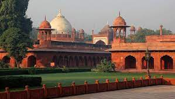

The Coutyard
The inner courtyard is the most complex and complete part. It is accessed by one of the 3 doors pierced in the enclosure. The South Gate, the largest but also the simplest is called "Sidhi" or "Sirhi Darwaza". The East and West gates, respectively "Fatehabadi Darwaza" and "Fatehpuri Darwaza", are identical, with orientation. As you can imagine, "Darwaza" means "Door, passage, entrance". It is a small building about ten meters long and below which an opening has been drilled. The South Gate is taller and narrower.
When the bus enters the courtyard of Taj Mahal suddenly the level of excitement increase within all of us and again there was a rush towards the door to get down.
Shaheli Burj
The Saheli Burj are secondary mausoleums placed at the southern corners of the inner courtyard. They are occupied by the first two wives of Shah Jahan, who placed in a single site his 3 wives. Recall that he himself is buried in the main mausoleum. The West Mausoleum belongs to Fatehpuri Mahal, according to a historical document written by Thomas and William Daniel in 1789.
The picture which I have seen in post cards and magazines have come live right ahead and I can see it by my own eyes.
khawaspurras
The two buildings at the north corners of the inner courtyard are called "Khawasspuras". They contained the maintenance staff of the site as well as the persons authorized to perform the funeral service and the "Hafiz" (the one who recites the Koran). This small inner courtyard is known as "The Fatehpuri Gate Court". It forms a rectangle whose arcades adjoin the back of the main door. The Khawasspuras were left for a long time abandoned since the end of the 18th century until 1900, then 1908, two years during which Lord Curzon restored them. Recall that India was a British colony and is still part of the Commonwealth. The Western Court was used as a daycare until 2003, but now it contains the tourist office.
That movement is truly memorable
The main gate

The great gate Darwaza-i rauza is a marvel of Mughal architecture. It separates the inner courtyard and the gardens and is the only real entry into the Taj Mahal site. It is a symbolic transition between the real world, the secular world, and the spiritual world, in which we will find a representation of Paradise (Gardens), as well as a mosque and especially the famous mausoleum. For those who wonder why Paradise is symbolized by a garden, it is enough to put itself in the place of the constructors. In the 17th century in India the country is rather arid, a garden is seen as a pleasure bringing freshness and food source, abundance. It was then a rare benefit that could symbolize Paradise.
The first thing which I have notice while waking towards the huge gate is the beautiful white structure in front of me.
The gardens
Most Mughal gardens are rectangular with a pavilion or a central tomb. The Taj Mahal garden derogates from this rule by pushing the main mausoleum to an unusual place at the bottom of the garden. (See the various hypotheses that may explain this). This garden is a square of 300m of side divided into 4 pieces by 4 calm water bodies (when the fountains are not in march) in which is reflected the mausoleum. They are oriented towards the 4 cardinal points. The central part is highly symbolic, here it is composed of a terrace and a large marble fountain.
When we have finish exploring the beautiful Taj Mahal from inside and from outside, we had towards the garden again and even find a nice place to sit around for a while with my friend.